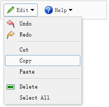
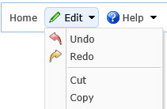
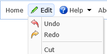

扩展自$.fn.linkbutton.defaults。使用$.fn.menubutton.defaults重写默认值对象。
菜单按钮是下拉菜单的一部分。它伴随着linkbutton和menu组件。在用户点击linkbutton之前菜单是隐藏的，当用户用鼠标点击或移动到linkbutton上面的时候菜单才会显示。

通常菜单按钮通过标签创建。
使用Javascript创建菜单按钮。
菜单按钮属性扩展自linkbutton(按钮)，菜单按钮新增的属性如下：
| 属性名 | 属性值类型 | 描述 | 默认值 |
|---|---|---|---|
| plain | boolean | 为true时显示简易效果。 | true |
| menu | string | 用来创建一个对应菜单的选择器。 | null |
| menuAlign | string | 允许用户设置顶级菜单对齐方式。可用值有：'left','right'。（该属性自1.3.6版开始可用） | null |
| duration | number | 定义鼠标划过按钮时显示菜单所持续的时间，单位为毫秒。 | 100 |
| hasDownArrow | boolean |
定义是否显示向下箭头图标。（该属性自1.4.2版开始可用） 为true时： 为false时： |
true |
| 方法名 | 方法参数 | 描述 |
|---|---|---|
| options | none | 返回属性对象。 |
| disable | none | 禁用菜单按钮。 |
| enable | none | 启用菜单按钮。 |
| destroy | none | 销毁菜单按钮。 |